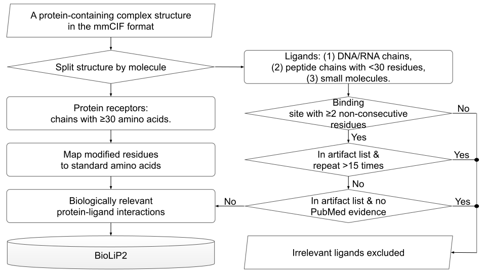

BioLiP data curation
BioLiP database is constructed using know protein structures in PDB. The overall workflow for database construction is shown below, which includes three major steps.
Step 1. For each entry in the PDB, the 3D structure in mmCIF format is downloaded. For each protein chain (called receptor), the following information (if any) is collected either from the mmCIF file or from the SIFTS project: catalytic site residues mapped from the Catalytic Site Atlas; annotated Enzyme Commission (EC) numbers; Gene Ontology (GO) terms, UniProt accessions, and the PubMed ID, with which the abstract of the research paper can be downloaded. Modified residues of proteins and nucleic acids are mapped to standard residue types (See below for details).
Step 2. Ligands, which are defined as small molecules, are extracted from the mmCIF file. Three kinds of ligands are collected in the BioLiP database: regular ligands (labeled with "." by the _atom_site.label_seq_id record), including metal ions; DNA/RNA; and peptides with less than 30 residues. The binding affinity (if any) for each ligand is taken from the original literature, Binding MOAD, PDBbind-CN, and Binding DB databases.
Step 3. The ligand binding sites on the protein receptors are identified by the following procedure. First, all inter-molecular atomic interactions (i.e., receptor-ligand atom pairs within sum of van der Waals radius plus 0.5 Å) are calculated. Second, protein residues with at least two inter-molecular atomic interactions to a ligand are labeled as ligand binding residues. Third, two or more ligand binding residues for the same ligand are grouped into the same binding site.
Step 4. Each ligand with at least one binding site on a protein receptor is submitted to a composite automated and manual procedure to assess its biological relevance, which is illustrated in the right panel of the figure below.

Mapping of modified residues to standard residue types
BioLiP maps non-standard residue types in proteins and nucleic acids to standard residue types, including the 20 standard amino acids (ALA, CYS, ASP, GLU, PHE, GLY, HIS, ILE, LYS, LEU, MET, ASN, PRO, GLN, ARG, SET, THR, VAL, TRP, TYR), 4 ribonucleotides (A, C, G, U), and 4 deoxyribonucleotides (DA, DC, DG, DT). First, common non-standard residue types MSE and PSU are mapped to the amino acid MET and the ribonucleotide U, respectively. Second, if the mmCIF file contains the "_pdbx_struct_mod_residue" record, which is equivalent to the "MODRES" record in a PDB file, it is used to map non-standard residue name to standard residue name. Third, for a non-standard residue that cannot be mapped by the previous two rules, the atom names of all non-hydrogen atoms from this residue are compared against those of the 28 standard residue types. For example, for a non-standard residue HYP (4-hydroxyproline) with the following atoms (N, CA, C, O, CB, CG, CD, OD1), its similarity to standard amino acid PRO with atoms (N, CA, O, CB, CG, CD) can be calculated by the Jaccard index:
J=|HYP∩PRO|/|HYP∪PRO|
Here, HYP∩PRO = (N, CA, C, O, CB, CG, CD) is the set of intersection between the atoms of the two residues, while HYP∪PRO = (N, CA, C, O, CB, CG, CD, OD1) is the union set between the atoms of the two residues. In this example for HYP versus PRO, the Jaccard index J=7/8. After comparing the atomic compositions between an unmapped non-standard residue to all 28 standard residue types, the non-standard residue is mapped to the standard residue type with the highest Jaccard index.
BioLiP API
BioLiP can be queried by RESTful API.
Chemical information for ligand can be queried by its 3-letter Chemical Component Dictionary (CCD) used by PDB. For example, to show chemical information for FMB (Formycin B):
Ligand-protein interactions can be searched by PDB ID, ligand, UniProt accession, EC number, GO term, and PubMed ID:
The above queries will return the result in HTML format. Append the "&outfmt=txt" parameter to the query to obtain plain text output. For example, the last query above can be modified to get plain text output by:
The format of the plain text output is documented at readme.txt.
Alternatively, ligand-protein interactions can be searched by sequence of protein receptors or polymer ligands (DNAs, RNAs or peptides):


{kind=link}